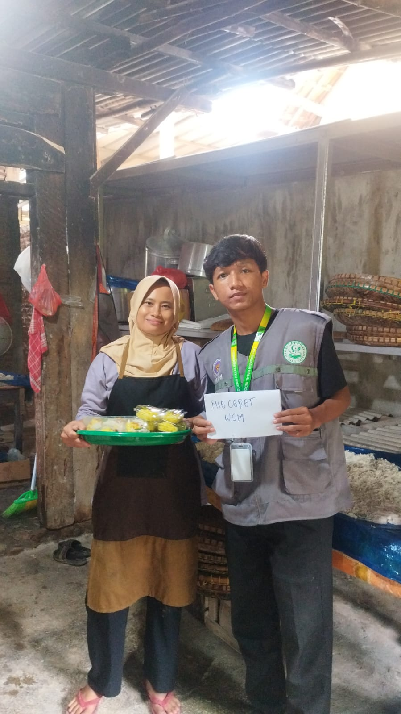

Pendamping Proses Produk Halal (PPH)
Mendampingi pelaku UMKM dalam proses pengajuan sertifikasi halal melalui skema self declare, mulai dari pemeriksaan dokumen hingga pemenuhan persyaratan administrasi.


Tentang Pengalaman
Sebagai Pendamping Proses Produk Halal (PPH), saya mendampingi pelaku UMKM dalam proses sertifikasi halal melalui skema self declare.
Pendampingan dilakukan dengan membantu pelaku usaha memahami persyaratan sertifikasi halal, memeriksa dokumen dan informasi produk, serta memastikan data yang diperlukan telah lengkap.
Tugas & Tanggung Jawab
Kompetensi yang Digunakan
Pengalaman ini mengembangkan kemampuan dalam komunikasi, pendampingan UMKM, pemeriksaan dokumen, pengelolaan data, administrasi, koordinasi, dan pemecahan masalah.